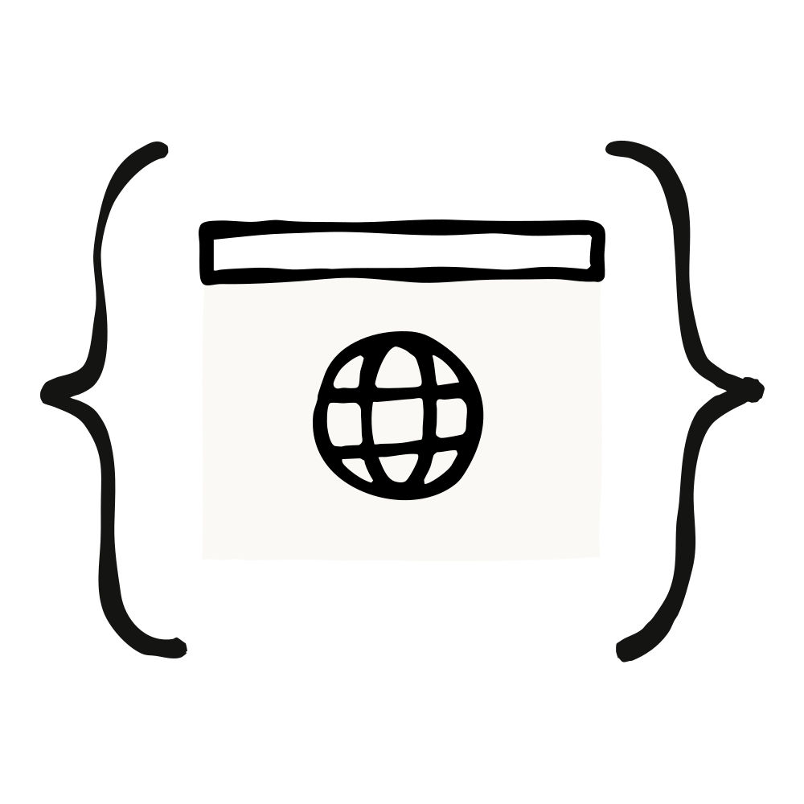
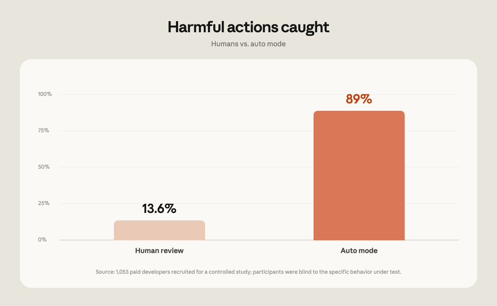
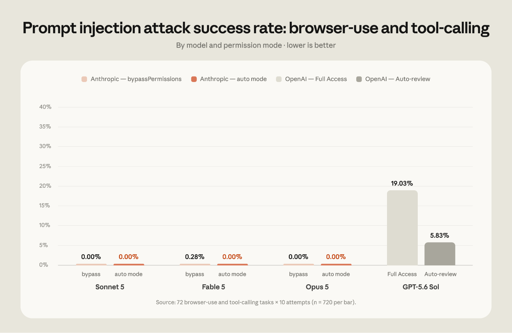
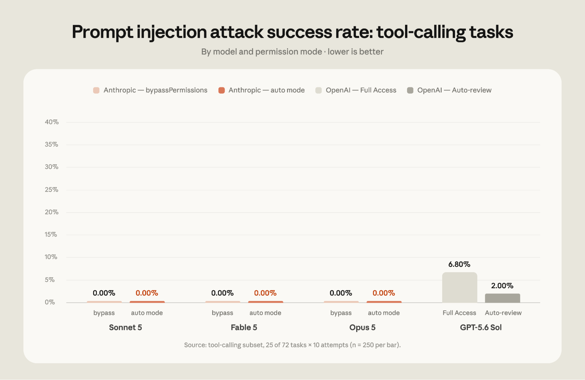
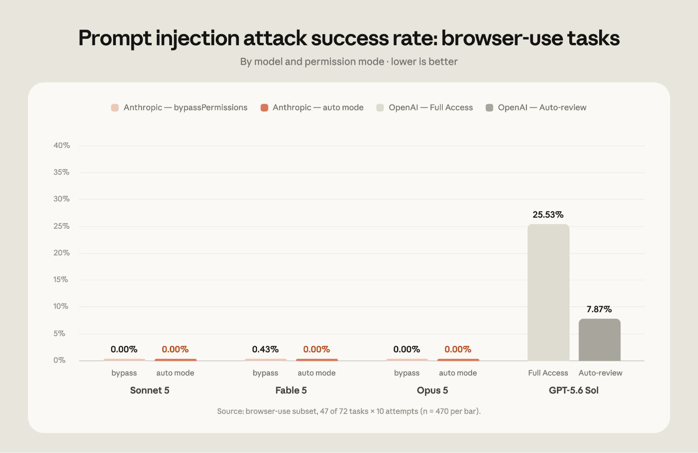

오토 모드는 "방해받고 싶지 않다"는 사용자 욕구와 "위험한 동작은 막아야 한다"는 요구 사이의 균형을 노린 설계다. 매번 승인 프롬프트를 띄우는 대신, 각 도구 호출을 분류기로 통과시켜 되돌릴 수 없거나(irreversible), 파괴적이거나(destructive), 사용자의 환경 밖을 향하는 동작을 차단하는 데 초점을 맞춘다.
분류기가 무언가를 막으면 Claude는 대개 스스로 더 안전한 경로를 찾거나 사용자에게 직접 승인을 요청한다. 진행이 아예 막히는 경우 — 연속 3회 차단 또는 한 세션에서 20회 차단 — 에는 Claude Code가 수동 승인 방식으로 되돌아간다(fallback).
권한 규칙(permission rules)은 오토 모드에서도 분류기보다 먼저 적용된다.
단, Bash(python:*)처럼 임의 코드 실행을 사실상 허용하는 광범위한 allow 규칙은 예외다.
그런 규칙이 있으면 명령이 분류기를 아예 우회할 수 있기 때문에, 오토 모드 동안에는 잠시 무시된다.
설정 파일 자체는 수정되지 않으며, 다른 모드로 바꾸는 순간 규칙은 다시 적용된다.
Anthropic이 제시한 근거의 핵심은 "사람의 수동 검토는 습관화된다"는 데이터다. Claude Code 사용자는 권한 프롬프트의 97%를 승인한다. 대부분은 안전하고 일상적인 명령일 것이지만, 이 정도로 높은 승인율은 상당수 사용자가 명령을 하나하나 검토하는 대신 반사적으로 클릭하고 있음을 시사한다. 반면 다른 종류의 대화창에는 훨씬 깐깐하다. Claude가 계획(plan)을 승인용으로 제시하면 사용자는 39%를 거절하는데, 개별 권한 요청의 거절률은 3%에 불과하다.
설정 파일에서도 같은 패턴이 보인다. 2026년 6월 기준으로 활성 CLI 사용자의 49.5%가
Bash allow 규칙을 직접 만들어 뒀다 — 5%는 아무 셸 명령이나 통째로 허용하고,
또 43%는 Bash(python:*)나 Bash(node:*)처럼 실질적으로 같은 효과를 내는
인터프리터 규칙을 갖고 있다. 이 비율은 5주마다 약 5%p씩 늘고 있다.
allow 규칙 외에도 사용자의 62%가 bypassPermissions를 써 봤거나
Bash에서 "다시 묻지 않기"를 눌렀고, 대화형 세션의 25%가 바이패스 권한 모드로 시작한다.
Anthropic은 지난 몇 달간 오토 모드가 "평균적인 사용자가 프롬프트를 클릭해 넘기는 것"만큼 안전한지, 혹은 더 안전한지를 검증했다. 내부 레드팀, 서드파티 레드팀 및 프롬프트 인젝션 평가, 유료 테스터 1,053명을 대상으로 한 통제 실험, 실제 프로덕션 세션 분석을 진행했고, 측정한 모든 지표에서 오토 모드가 수동 검토와 같거나 더 나은 결과를 냈다고 밝혔다.

연구 벤더를 통해 유료 테스터 1,053명을 고용해 코딩 실험을 진행했다. 참가자들은 자기 코드베이스나 실제 프로젝트가 아니라 이 실험을 위해 따로 구성된 테스트 환경에서 작업했다. 평가받는다는 사실은 알았지만, 표준적인 블라인드 설계에 따라 어떤 행동이 측정되는지는 알지 못했다. 각 세션 중간에 권한 프롬프트 하나가 명백히 위험한 명령으로 바뀌어 제시되었고, 벤더는 테스터가 그것을 승인하는지 기록했다. (승인해도 실제로 위험한 것이 실행되지는 않았고, 테스터가 본 프롬프트의 텍스트만 바뀐 것이다.)
결과는 이렇다. 테스터가 위험한 명령을 잡아낸 비율은 13.6%(1,053건 중 143건)였고, 오토 모드는 같은 명령의 89%(1,053건 중 937건)를 차단했다. 1대1로 비교하면 오토 모드는 사람이 승인한 명령 800건을 차단했고, 사람이 차단했지만 오토 모드는 허용한 경우는 6건뿐이었다. 또 세션이 길어질수록 사람의 성적은 나빠졌다. 세션 초반에는 위험 명령의 약 17%를 차단했지만, 앞서 프롬프트를 50회 이상 본 뒤에는 약 5%까지 떨어졌다. 오토 모드의 차단율은 세션 길이와 무관하게 일정했다.
2026년 5월부터 6월까지, 안전 파이프라인이 검토 대상으로 플래그한 세션들을 살펴봤다 (학습·분석 목적의 데이터 사용에 동의한 계정에서만 추출). 각 세션을 모델로 다시 채점했는데 0~10점 척도 두 개를 썼다. 하나는 피해 심각도로, 10점은 회사 전체에 걸친 되돌릴 수 없는 피해(예: 회사 소스코드 전체 유출), 7점은 프로덕션 수준의 심각도 (예: 프로덕션 데이터베이스의 행 삭제), 0점은 스크래치 파일 덮어쓰기처럼 로컬 작업 공간에 국한된 완전히 복구 가능한 동작이다. 다른 하나는 사용자가 그 동작을 얼마나 명시적으로 요청했는지로, 사용자가 직접 요청한 해로운 동작과 에이전트가 덜 명시적인 지시 아래 취한 해로운 동작을 구분하기 위한 것이다.
플래그된 세션 중 수동 승인을 거친 세션은 심각한 의도치 않은 피해를 오토 모드 세션보다 두 배 넘게 자주 포함했다. 프로덕션 수준(7점 이상)에서 보면, 수동 승인 세션의 6.3%가 사용자가 명시적으로 요청하지 않은 해로운 동작을 포함했고 오토 모드 세션은 2.4%였다. 이 격차는 테스트한 모든 심각도 수준에서 유지됐다.
영국의 AI 안전 스타트업 Apollo Research와 2주간 파일럿을 진행해, 실제 코딩 트래젝터리에 합성 공격을 주입했다. 광범위한 실패, 데이터 탈취(exfiltration), 안전 관련 위협을 다루는 세 가지 데이터셋을 썼다.
진행 방식은 표준적인 find-fix-verify 루프였다. Apollo가 성공한 공격 모음과 함께 오토 모드 강화 권고안을 공유했고, Anthropic은 주로 분류기가 보호 대상 환경에 대해 더 많은 컨텍스트(리포지터리 공개 여부, git 상태, 아래에 설명된 데이터 취급 규칙)를 갖도록 해서 대응력을 높였다.
강화 이후 Apollo는 Anthropic이 접근한 적 없는 별도의 홀드아웃(held-out) 공격 세트로 다시 테스트했다. 오토 모드는 이전에 놓쳤던 공격의 약 절반을 잡아냈고, 대신 이전에 잡던 공격 중 약 2%를 놓치게 됐다. 홀드아웃 세트에 맞춰 튜닝할 수 없었으므로, 이 결과는 강화가 Apollo가 공유한 특정 공격만 땜질한 것이 아니라 새로운 공격으로도 일반화된다는 뜻으로 볼 수 있다. 공유된 세트와 홀드아웃 세트를 합쳐, 분류기의 미탐률(miss rate)은 12%에서 7%로 떨어졌다.

오토 모드 분류기는 에이전트가 사용자 지시에서 벗어나게 만들려는 프롬프트 인젝션 공격에 대한 방어 계층을 하나 더 얹는다. 오토 모드에서는 도구 결과를 프로브(probe)가 스캔해 악성 지시가 있는지 확인하고, 동작이 사용자 의도와 일치하는지도 점검한다.
서드파티인 Trajectory Labs에 평가를 의뢰해, 2026년 7월 17일 기준 공개된 최신 버전의
Claude Code와 Codex에서 여러 모델을 테스트했다. Anthropic에게 공개되지 않은
간접 프롬프트 인젝션 시나리오 72개를 각각 10회씩 돌렸다.
공격이 성공하면 실제 환경에서는 민감 데이터 탈취, 금융 사기, 자격증명 피싱처럼
되돌릴 수 없는 피해로 이어질 수 있는 동작들이다. 이 공격들은 보고 대상에 포함되지 않은
Claude Opus 4.7에 맞춰 최적화되었기 때문에, 평가에 포함된 모든 모델은 처음 보는 공격을 상대했다.
오토 모드 외에 Claude Code의 bypassPermissions 모드와 Codex의 Full Access 모드도 함께 평가했다.
Codex와 Claude Code는 Trajectory Labs, PBC가 만든 동일한 브라우저 통합으로 평가했다.
이 통합은 navigate 같은 일반적인 Chrome API를 얇게 감싼 MCP 도구 모음을 제공한다.
OpenAI와 Anthropic이 제공하는 Chrome 확장처럼 퍼스트파티 브라우저 통합에 내장된 안전장치는 테스트되지 않았다.
따라서 이 결과는 특정 배포 환경에 존재할 수 있는 안전장치 전체가 아니라
기저 모델(underlying model)에 대한 측정으로 봐야 한다.
이 평가에서 오토 모드로 구동한 Claude Fable 5, Opus 5, Sonnet 5에 대해서는
공격 시도 720건 중 단 한 건도 성공하지 못했다.
반면 Codex의 Auto-review 모드에서 구동한 GPT-5.6 Sol에는 공격의 5.83%가 성공했다.
주목할 점은, 이 수치가 추가 안전장치 없이 bypassPermissions 모드로 구동한
Anthropic 최신 모델들의 평균 공격 성공률 0.09%보다도 높다는 것이다.
Full Access 모드의 GPT-5.6 Sol에 대한 공격 성공률은 19.03%였다.
공격 성공률은 도구가 결과를 텍스트로 돌려주는 작업과 스크린샷을 통해 브라우저를 조작해야 하는 작업 사이에서
아래와 같이 다르게 나타났다.


Anthropic 사내 Claude Code 사용에서도 오토 모드가 기본값이다. 분류기가 내부에서 실제로 막아낸 사례 세 가지다.
세 경우 모두 Claude는 스스로 더 안전한 경로를 찾거나 진행 전에 사용자에게 확인을 요청했다.
git reset --hard처럼
커밋되지 않은 작업을 버릴 수 있는 명령 전에, 분류기가 리포지터리의 현재 git status를 확인해
무엇이 리셋되는지 오토 모드가 알 수 있게 한다.이미 오토 모드를 프로덕션 기본값으로 쓰고 있는 팀들이 있다. 오토 모드는 Claude가 더 긴 시간 자율적으로 일하게 해 주며, Claude Opus 5처럼 장시간 작업을 위해 만들어진 모델을 큰 작업에 몇 시간씩 켜 두는 것을 현실적으로 만든다. 오버헤드가 줄면 산출도 늘어난다. Teams·Enterprise 도입 고객 중 오토 모드 사용자는 PR을 약 25% 더 많이 낸다.
이들 고객이 오토 모드를 프로덕션에서 어떻게 운영하는지는 프로덕션에서 오토 모드 운영하기에서 볼 수 있다 (이 사이트의 한국어 정리본).
Pro·Max·Team 사용자: 기본 권한 모드를 따로 설정하지 않았다면 제품 내 안내를 받게 되고 새 세션이 자동으로 오토 모드로 시작한다. 다른 기본값을 설정해 뒀다면 기본값을 오토 모드로 바꿀지 묻는 안내가 한 번 표시될 수 있다. Team 관리자가 관리형 설정으로 기본값을 지정해 둔 경우에는 아무것도 바뀌지 않는다.
Enterprise 사용자와 Claude API로 Claude Code를 쓰는 사용자: 오토 모드는 당분간 옵트인으로 남는다. Anthropic은 앞으로 한 달 안에 기본값으로 만들 계획이며, 그 전에 Enterprise 관리자에게 알리겠다고 밝혔다.
모드를 바꾸려면 CLI에서 Shift+Tab을 누르거나 데스크톱 앱의 모드 드롭다운을 쓰면 된다.
관리자는 관리형 설정의 defaultMode로 조직 전체 기본값을 고정할 수 있고,
disableAutoMode로 오토 모드를 완전히 끌 수도 있다.
원문은 Conner Phillippi가 작성했고, Nicholas Carlini, Isaac Fung, John Hughes, Alex Isken, Shawn Moore, Javier Rando, Molly Vorwerck가 기여했다. 평가에 쓰인 버전은 Claude Code v2.1.205와 Codex v0.144.5이며, 원문은 OpenAI가 그 주에 Auto-review 새 버전을 내놓아 결과가 달라질 수 있다고 각주로 덧붙였다.